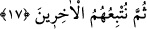

BİZ SİZİ
DAYANIKSIZ BİR SUDAN
YARATMADIK MI?
16. Biz, (bunlar gibi inkârcı olan) öncekileri helâk etmedik mi?
17. Sonra arkadakileri de onların ardına takacağız.
18. İşte biz suçlulara böyle yaparız!
19. O gün, (hakîkatleri) yalan sayanların vay hâline!
20. (Ey insanlar!) Biz sizi dayanıksız bir sudan yaratmadık mı?
21. İşte o suyu, sağlam bir yere yerleştirdik.
22. Belli bir süreye kadar.
23. Biz buna güç yetirmişizdir. Ve bizim gücümüz ne büyüktür!
24. O gün (hakîkatleri) yalan sayanların vay hâline!
“Biz” Nûh, Ad, Semud kavimlerini ve Peygamber (s.a.) Efendimiz’in peygamber
olarak gönderilmesinden önceki diğer helâk edilen “öncekileri helâk etmedik mi?”
Bunun sebebi, onların hüküm gününü yalan saymaları idi. Cümlenin amacı, kâfirlerin
helâk edileceklerini vurgulamaktır. Cümledeki iki olumsuz bir olumlu anlamı ifâde
etmektedir. Çünkü olumsuzun olumsuzu, olumlu anlam ifâde eder. Burada sanki şöyle
denmiş oluyor: Hüküm gününü inkâr edenler, helâktan kurtulmuş değillerdir. Tam tersine
biz onları helâk edip yok etmişizdir.
17. Sonra arkadakileri de onların ardına takacağız.
Bu “geridekiler,” Peygamber (s.a.) Efendimiz’in peygamber olarak gönderilmesinden
sonraki kâfirlerdir. Anlamı şöyledir: Biz o geridekileri, inkâr ve yalanlamada
öncekilerin yolunu izleyen benzerlerinin peşine takacağız. Bir başka ifâdeyle; onları